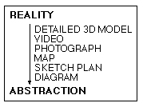

I. Introduction
Problem Definition
Urban designers are engaged in the practice of improving urban life by
proposing changes in the city's built form. In order to make these proposals,
they must have a rich understanding of the place in question. In past
centuries, most cities were small enough that a planner could have a good
understanding of who lived in the city and what their needs were, but our
cities are far too complicated today for this informal system to work.
Countless factors affect the inner workings of the city, so in an attempt to
gain an understanding of place, planners try to examine aerial photographs,
engineering plans, Census data, economic studies, transportation systems, etc.
Since one person does not have the mental ability to hold data on all of these
subjects in their head at once, we currently employ a system of planning by
committee. Many people are directed to study certain aspects of a problem, and
then this information is supposed to be synthesized in meetings and joint
reports.
This study proposes a different solution to the problem of synthesizing
information. Since the urban design issue is mainly one of the storage,
analysis and presentation of spatial data, geographic information systems (GIS)
have much to offer the field. Scientific disciplines have used GIS for years,
but most designers, being involved in work which is a mixture of science and
art, have clung to traditional tools. Sketch planning is an activity that
requires a great amount of time and effort to do properly. The area under
consideration must be understood in great detail, including the physical layout
of infrastructure, patterns of activity, crime, demographics, etc. Most cities
do not have enough time or money to send planners out into the field to study
every area of the city to develop an understanding of these factors through
personal observation. This thesis explores ways in which a GIS database can be
used to develop this understanding of the urban landscape without a field
investigation of every acre of the city.
What is a sketch plan
Urban designers use sketch planning to create a simplified picture of an
otherwise complex scene for the purpose of clearly communicating design
concepts. Different designers have different ideas of what a sketch plan is,
from a highly representative picture to an abstract diagram. In the context of
this paper, a sketch plan is a picture drawn in plan view that distills certain
key components of a landscape to tell a story about a place that words could
not express as succinctly. Sketch plans are often compared with diagrams, but I
see a diagram as being a generalized sketch plan because it does not try to
capture the spatial relations of a place in as much detail as a sketch plan.
Figure 1: Spatial Description Techniques

As our main form of communication is through words (expressed orally or
written down), the information in a sketch plan could be expressed in this way,
but it is a fact that, especially in design, a picture often is worth a
thousand words. Since sketch plans are often developed from aerial photographs,
why isn't the photograph enough? In fact, it is more than enough. The
photograph is too rich in information--it tells too many different stories.
Like a lawyer uses information from a case, decades of relevant precedent and
their own knowledge and training to build a persuasive argument for the court,
the designer uses a sketch plan to convey their analysis of a landscape based
on the information present in source maps, knowledge about urban design and
their own training in the discipline. So the sketch plan tells a story which is
unique based upon the individual designer (or designers) and available
information sources.
Research Questions
The main question that this research will address is whether GIS can be used to
generate sketch plans. As this is a very early investigation into this topic,
this must be the initial thrust of the research. If it is possible to produce
sketch plans using GIS, then we can decide whether the urban design field can
benefit from GIS or whether traditional methods do a better job of describing
the urban landscape. If GIS can be effectively applied to urban design
problems, we must ask which problems should we address first, and how can
future data collection and systems design efforts facilitate the implementation
of urban design information systems.
Significance
Zoning (and possibly the comprehensive plan--when adhered to) is one of the
only city planning tools that attempts to consider the city as a whole.
Subdivision reviews, permitting, design reviews and impact assessments all
approach the planning problem from the point of view of a single project.
Although zoning is a useful planning tool, we are concerned about more aspects
of the city than the simple regulation and segregation of land uses. We must
also consider qualities such as safety, ease of transportation, aesthetics, and
a sense of place. In order to tackle these problems on a large scale,
discussants need a general understanding of the city. This understanding is
difficult to achieve, as a city is a combination of thousands of structural and
social elements, and people can only consider a few at a time (psychologists
believe that we can only hold about five to seven unrelated items in immediate
memory).[1]
This paper seeks to alleviate the planner's dilemma, by using GIS and
electronic communication tools to increase the amount of information used in
the planning process and to allow multiple participants access and input into
the construction of an image of the city. If the urban design GIS described
here can be implemented, planners will have a powerful new tool for performing
more thorough analyses of the city and therefore creating better urban
environments.
Research Methodology
There are four steps to my approach at answering the research questions. First,
I look at the literature of the leading thinkers on urban design. As there is
little precedent for integrating information systems with urban design, the
second step is to look at the body of knowledge developed in other fields on
applying GIS to planning. With this information, I attempt to prototype and
test an urban design GIS based on the concepts espoused by Kevin Lynch in
The Image of the City. Boston, Massachusetts is used as a test case as
an extensive digital database was available for this city. Fourth and finally,
the applications and concepts developed in the prototype are used to critique
the design objectives of a current urban redevelopment plan for a public
housing project.
This redevelopment project involves a total redesign of an entire neighborhood
under the guidance of a central planning body. All elements of the neighborhood
are subject to change, including zoning, the configuration of roads, the design
of buildings and even the type of tenant mix. The central planning body also
would like the design proposal to address inter-agency communication and
collaboration. Because of its comprehensive nature, this project provides an
ideal test case for using GIS to help synthesize information for planning.
Next section (Literature Review)